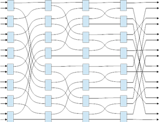
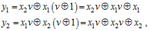
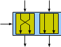
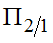
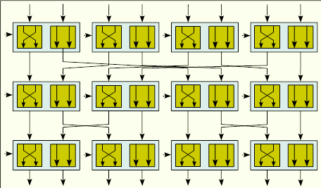
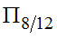
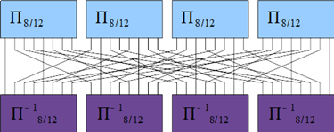
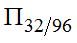
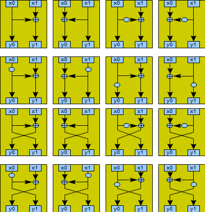

4.2.3. Итеративные шифры с раундовой функцией на основе управляемых операций
4.2.3. Итеративные шифры с раундовой функцией на основе управляемых операций
Другим подходом стало использование операций, зависящих от преобразуемых данных. Простейшей управляемой операцией является управляемая перестановка.
Управляемая перестановка — это перестановка бит входного вектора в соответствии с значением управляющего входа.
Существует два подхода к реализации управляемых перестановок. Первый из них предполагает выбор конкретной перестановки из нескольких альтернатив в зависимости от управляющего входа. Второй подход использует тот факт, что композиция нескольких перестановок также является перестановкой. При использовании этого подхода перестановки небольшого размера объединяются в большие блоки с использованием этого композиционного принципа. Рассмотрим простую композицию так называемых переключаемых подстановок (рис. 4.10).
 |
Рис. 4.10. Схема четырехслойной R-сети |
Каждый управляемый переключатель получает на вход один бит управляющего вектора. Данная перестановка имеет размер входа и выхода 16 бит, управляющий вектор имеет размер 32 бита.
Рассмотрим составляющие элементы многослойных перестановочных операций. Управляемая перестановка относится к классу линейных операций при фиксированном управляющем входе и нелинейной при рассмотрении управляющего входа как части данных. Простейшей перестановкой является перестановка  , т.е. размерности 2 с управляющим входом 1 бит. Она описывается уравнениями:
, т.е. размерности 2 с управляющим входом 1 бит. Она описывается уравнениями:

т. е. является квадратичной и представляется схематически, как изображено на рис. 4.11.
 |
Рис. 4.11. Перестановка , |
Управляемые операции с входом размерности 1 бит называются УО с минимальным управляющим входом. Такие операции редко применяются самостоятельно, а чаще объединяются в блоки, имеющие большую размерность. Один из способов такого объединения представлен на рис. 4.12.
 |
Рис. 4.12. Управляемая операция |
При этом из примитивных элементов получаются элементы , которые, в свою очередь, комбинируются с помощью операций перестановки в элементы следующего уровня размерности  (рис. 4.13).
(рис. 4.13).
 |
Рис. 4.13. Управляемая операция  |
При этом, благодаря использованию обратного преобразования, во втором слое получившаяся операция является инволюцией, т.е. операцией обратной самой себе. С использованием такой операции построен блочный шифр DDP-64.
Комбинированием этих примитивов в зависимости от управляющего входа можно построить блоки подстановок практически любого размера. При этом также используется концепция слоев управляемых элементов, соединенных фиксированными перестановками.
Определение 4.1
Переключаемой операцией является управляемое преобразование с минимальным управляющим входом, обратное самому себе, при инверсии значения управляющего входа.
Помимо использования управляемых подстановок и перестановок при построении практических БШ применяется управляемая операция добавления подключа, когда раундовый подключ выбирается из некоторого набора подключей в зависимости от преобразуемых данных.
Другим интересным классом управляемых операций является управляемая подстановка. Подстановка отличается от перестановки тем, что один выходной бит зависит от нескольких входных, без учета управляющих битов. Обычно подстановка задается таблично, но с использованием управляющих операций она может задаваться с помощью примитивных управляемых операций. Такими операциями являются операции, приведенные на рис. 4.14. По сравнению с операциями перестановки, операции подстановки обеспечивают больше возможностей построения управляемых макроподстановок путем объединения управляемых подстановок меньшего порядка.
 |
Рис. 4.14. Все возможные управляемые подстановки |
Комбинированием этих примитивов можно построить блоки подстановок практически любого размера. При этом используется концепция слоев управляемых элементов, соединенных фиксированными перестановками. Причем, чем больше слоев примитивных подстановок содержит управляемая макроподстановка, тем выше нелинейность выходных значений этой операции.
Кроме минимальных управляемых операций существуют также управляемые операции с тремя и более входами. Использование таких блоков дает большую свободу в построении различных примитивов, так как существует гораздо больше таких вариантов выбора разных операций по сравнению с одноместными.
Также, кроме рассмотренных примитивов с минимальным управляющим входом, используются примитивы с большей размерностью входов, например, элемент 2/2 осуществляющий выбор из 4 различных преобразований размерности 2.